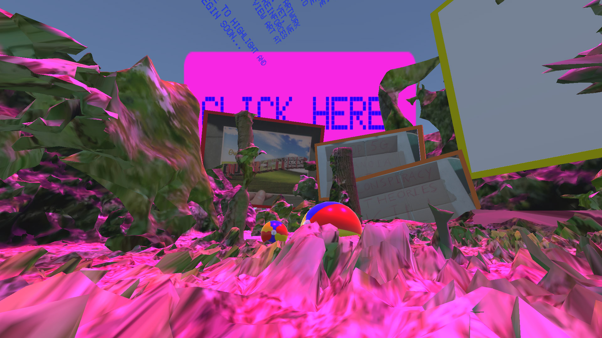
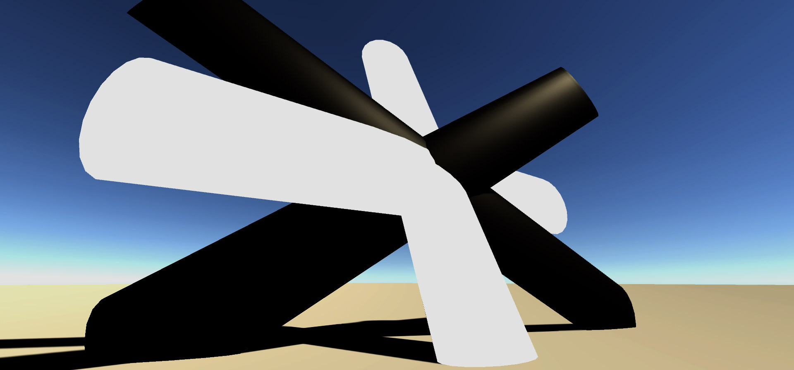

re(imagine)
Exhibition I
With All These Words, Are You Here?
By Marieke & Aafje & Yang & Kseniia
Iridescence
360 bubble view
By Jonas & Rein
Exhibtion I
For this exhibition, we are showing pieces of text and highlighting parts which all artists have in common --- an intention. In the live performance, we will be changing the pronoun “I” into artists’ names. The rest of the descriptions are then turned white. We question the curation of text in exhibitions --- with all these words, are the artists really present? The waiting room of the exhibition is to reflect on the issue of overcrowded museums. We question the mentality of viewing art as objects. In large openings, the artwork is often hidden behind the crowd of people waiting to view. Yet, we can always read the text standing by its side. This also reinforces the fact that text partakes an impactful role in how we view art at exhibitions.
Soundscapes
Soundsculptures realized in a 3D enviroment based on the soundscapes.
